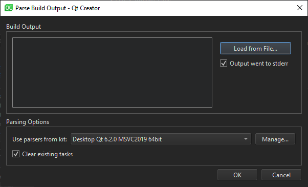

Parse build output
You can use Qt Creator's output parsers to parse output from builds done outside of Qt Creator or stored from previous build runs. By default, the parsers from the kit selected for the active project are used, but you can select another kit.
To parse build output:
- Go to Tools > Parse Build Output, or select (Create Issues From External Build Output) in the Issues view.

- Paste the build output in Build Output, or select Load from File to load it from a file.
- Clear Output went to stderr if the parser expects issues on
stdout. - In Use parsers from kit, select the kit to use for parsing the output. Select Manage to view and modify kit settings.
- The parser displays the parsed output in Issues. By default, the view is cleared before adding the new output. Clear Clear existing tasks to append the new output to the old output.
- Select OK to start parsing.
See also Issues.